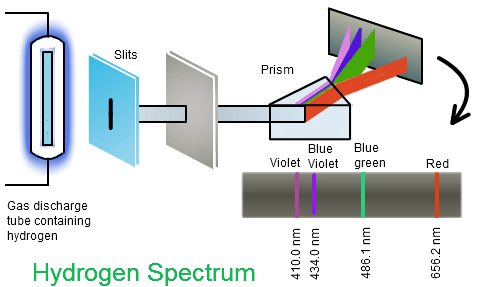
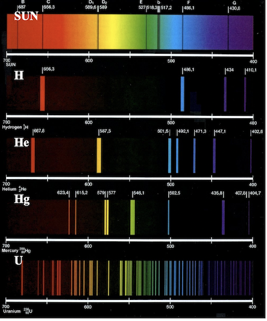
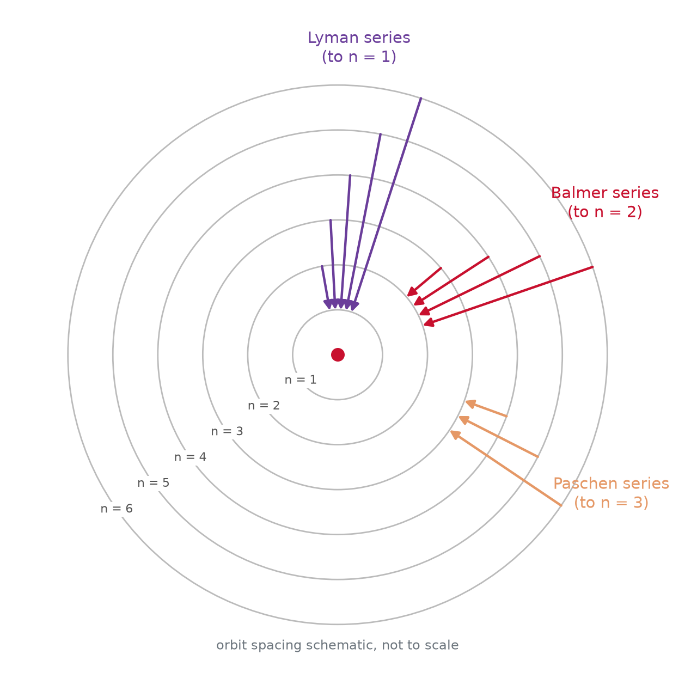
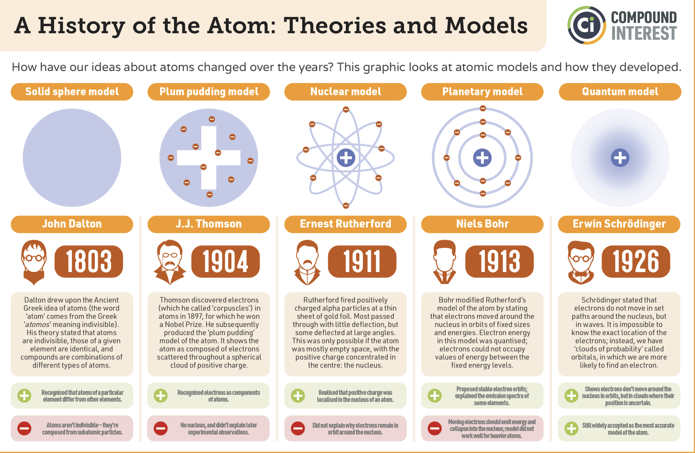
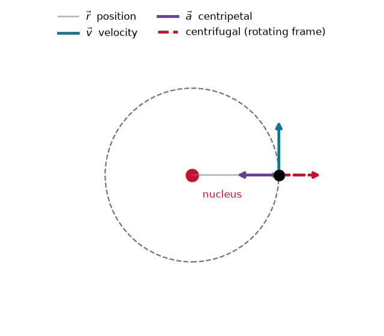
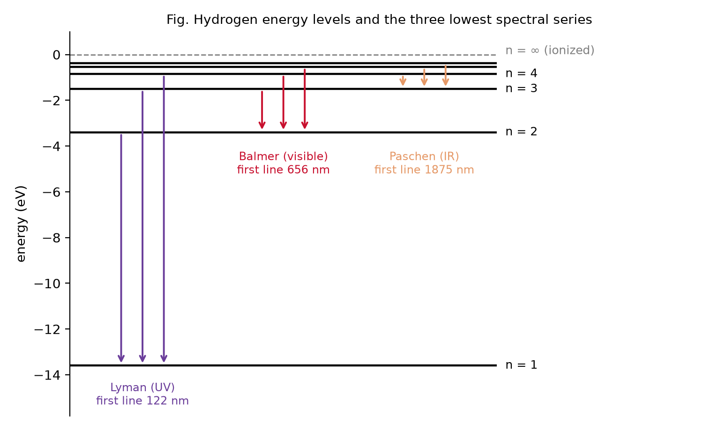

Chem 3240 · Lecture 1.5


Balmer (1885) fit part of the hydrogen spectrum. Rydberg generalized it:
\tilde{\nu} = R_H\left(\frac{1}{n_1^2}-\frac{1}{n_2^2}\right)
R_H = 1.097 \times 10^7 \ \text{m}^{-1} (Rydberg constant)
n_1 = 1,2,3,... and n_2 = n_1+1, n_1+2,...
Fits the data beautifully, but offers no physics
Why should integers govern atomic light?


Fit an integer number of de Broglie waves around the orbit:
2\pi r = n \lambda_e, \qquad \lambda_e = \frac{h}{m_e v}
Substituting gives the quantization condition:
m_e v r = \frac{n h}{2\pi} = n \hbar

Coulomb pull balances centrifugal force, \dfrac{e^2}{4\pi\varepsilon_0 r^2} = \dfrac{m_e v^2}{r}, combined with m_e v r = n\hbar:
r_n = n^2 a_0
a_0 = \frac{4\pi \varepsilon_0 \hbar^2}{m_e e^2} \approx 0.529 \,\text{Å}
E_n = -\frac{m_e e^4}{8 \varepsilon_0^2 h^2}\cdot\frac{1}{n^2} = -\frac{13.6\ \text{eV}}{n^2}
Photon energy of a transition, \tilde{\nu} = \nu/c:
\tilde{\nu} = R_H \left(\frac{1}{n_1^2} - \frac{1}{n_2^2}\right)
Now R_H is derived, not fitted:
R_H = \frac{m_e e^4}{8 \varepsilon_0^2 c h^3}

Slide the lower level: the whole series moves between UV, visible and IR.
{
const lines = d3.range(n1 + 1, n1 + 9).map(n2 => ({
n2,
lam: 1 / (1.097e-2 * (1 / (n1 * n1) - 1 / (n2 * n2))) // nm
}));
return Plot.plot({
width: 1120, height: 380, marginLeft: 40, marginBottom: 55,
x: {type: "log", label: "wavelength (nm) →", domain: [80, 5000],
ticks: [100, 200, 500, 1000, 2000, 5000], tickFormat: d => d},
y: {axis: null, domain: [0, 1]},
marks: [
Plot.rect([{}], {x1: 380, x2: 750, y1: 0, y2: 1, fill: "#ffd700", fillOpacity: 0.2}),
Plot.text([{}], {x: 534, y: 0.04, text: ["visible"], fill: "#8a6d00", fontSize: 13}),
Plot.ruleX(lines, {x: "lam", stroke: d => lamColor(d.lam), strokeWidth: 3}),
Plot.text(lines.filter(d => d.n2 <= n1 + 2),
{x: "lam", y: 0.97, text: d => `n₂=${d.n2}`, fill: "#333",
fontSize: 15, textAnchor: "start", dx: 6})
]
});
}For one-electron ions (He^+, Li^{2+}), add nuclear charge Z:
E_n = -13.6\,\frac{Z^2}{n^2}\,\,\,[\text{eV}]
Keep the physics, drop the picture: quantized energies, integer quantum numbers, light from jumps between levels
Atomic spectra are discrete because energy is quantized: Bohr’s standing-wave condition fixes the orbits and yields E_n = -13.6\,/\,n^2 eV, deriving the empirical Rydberg formula from first principles.
Chem 3240 · Quantum Mechanics